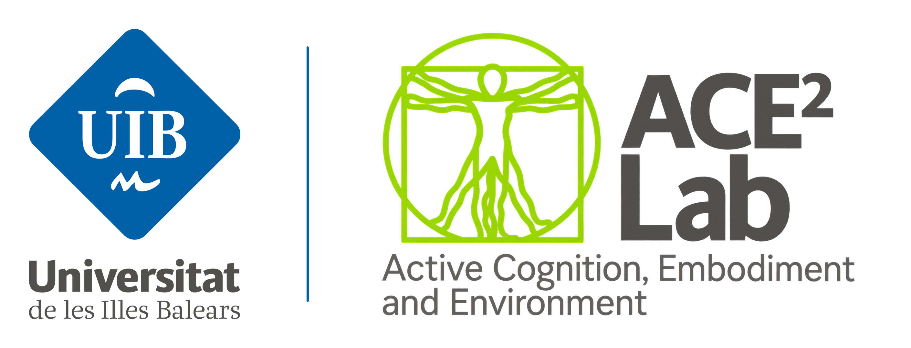
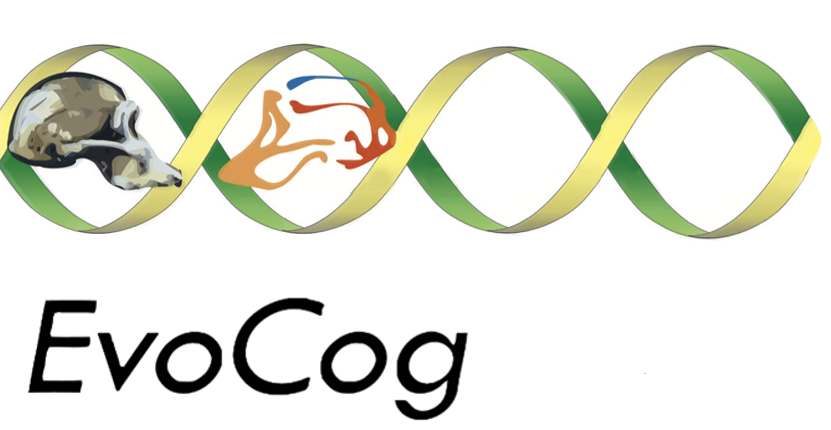
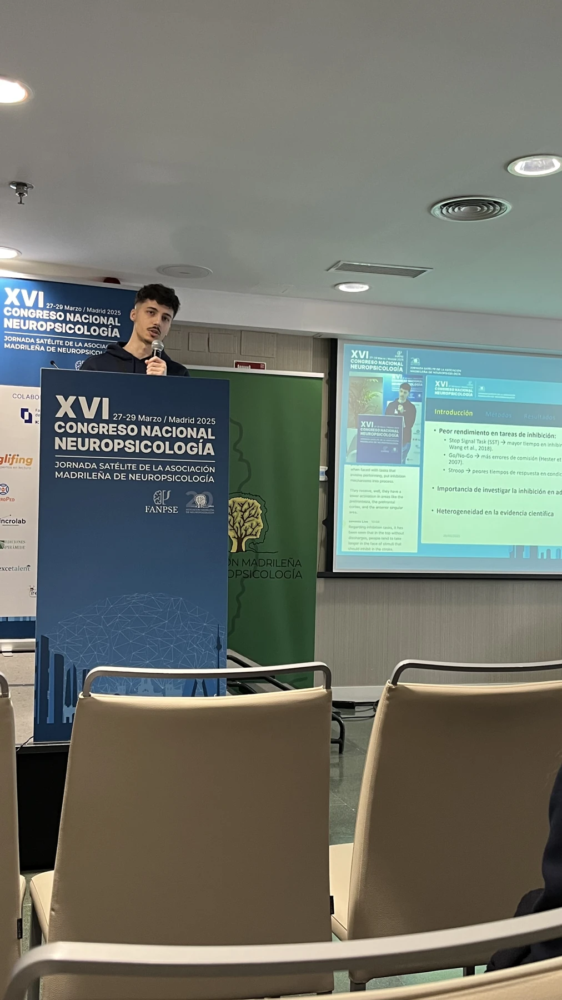
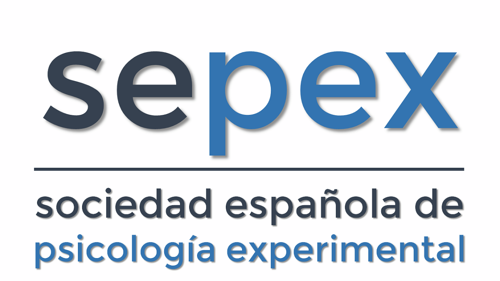
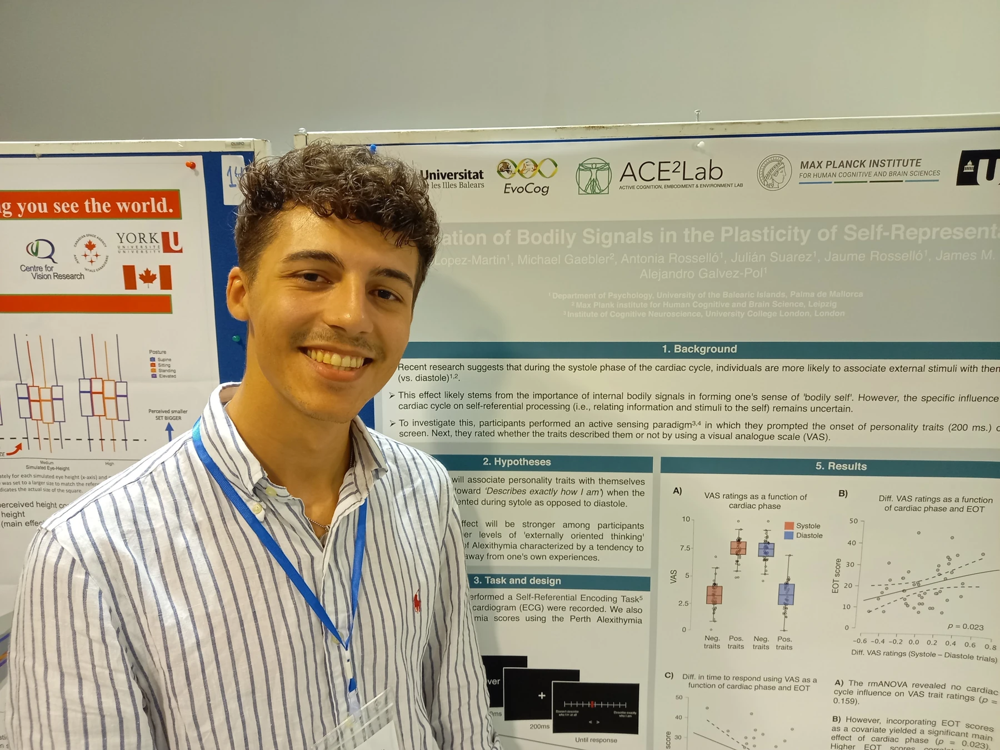

Interoceptive Rhythms and Perceptual Experience: Mechanisms, Contexts, and Strategies for Real-World Research.
NeuroImage, 325, 121650.
JIF 2025: 5.3 · Q1
Review articleTheoretical article
About me
PhD candidate in Cognitive Neuroscience
ACE2Lab · University of the Balearic Islands (UIB)
My research investigates how internal bodily rhythms shape active perception and why these body–perception dynamics differ across individuals. More broadly, I am interested in interoception as a multidimensional process and in its relationship with cognition and mental health.
My doctoral research focuses on the interaction between cardiac and respiratory activity and active sensing. I study how ongoing bodily rhythms influence when and how we acquire sensory information from the environment, and whether individuals coordinate perceptual actions with these internal physiological dynamics. I am particularly interested in how individual differences in interoceptive processing and subclinical psychological traits modulate these interactions.
To address these questions, I combine behavioural experiments with multimodal psychophysiology, including EEG, ECG, respiratory recordings, and eye tracking, together with statistical and computational analyses in R. My previous research also includes work on interoception and psychopathology, particularly anorexia nervosa, and inhibitory cognitive processes.
Keywords: Interoception, Active Sensing, Cardiorespiratory Dynamics, Individual Differences, Cognitive Neuroscience
My research experience includes work with the following groups and institutions:

ACE2Lab — Active Cognition, Embodiment and Environment Lab, UIB (PI: Dr. Alex Galvez-Pol).

EvoCog — Human Evolution and Cognition, UIB (PI: Dr. Enric Munar).
NeuroCog — Neuropsychology and Cognition, UIB (PI: Dr. Pilar Andrés).
UAM — Department of Biological and Health Psychology, with Dr. Ignacio Montorio.
Autonomous University of Madrid
Master's Thesis: Atypical Interoception in Eating Disorders: A Systematic Review and Meta-analysis (with distinction).
University of the Balearic Islands
Bachelor's Thesis: Behavioral protocol for detecting impairment in the inhibitory process of executive functions (with distinction).
Government of the Balearic Islands / European Social Fund Plus (ESF+)
Competitive predoctoral fellowship currently supporting my doctoral research at the University of the Balearic Islands, co-financed by the European Union through ESF+ under the Balearic Islands Programme 2021–2027.
Total award value: €138,117.41
Balearic Islands Health Research Institute (IdISBa) · NeuroCog Research Group
Competitive grant for young researchers supporting a 258-hour paid research placement during July and August 2023.
Amount granted: €1,774
University of the Balearic Islands Social Council
Awarded to the best Psychology Bachelor’s thesis at the University of the Balearic Islands in the 2022–23 academic year.
Read Bachelor thesis (PDF in Spanish)*Corresponding author
NeuroImage, 325, 121650.
JIF 2025: 5.3 · Q1
Neuropsychology Review, 36(3), 428–445.
JIF 2025: 8.2 · Q1
Biological Psychology, 199, 109078.
JIF 2025: 3.3 · Q1
Physics of Life Reviews, 47, 128-130.
JIF 2023: 13.7 · Q1

XVI Congreso Nacional de Neuropsicología (FANPSE) · Madrid, Spain
Event website
XIV Congreso de la Sociedad Española de Psicología Experimental (SEPEX) · Almería, Spain

Body Representation Network Conference · Palma de Mallorca, Spain
View poster